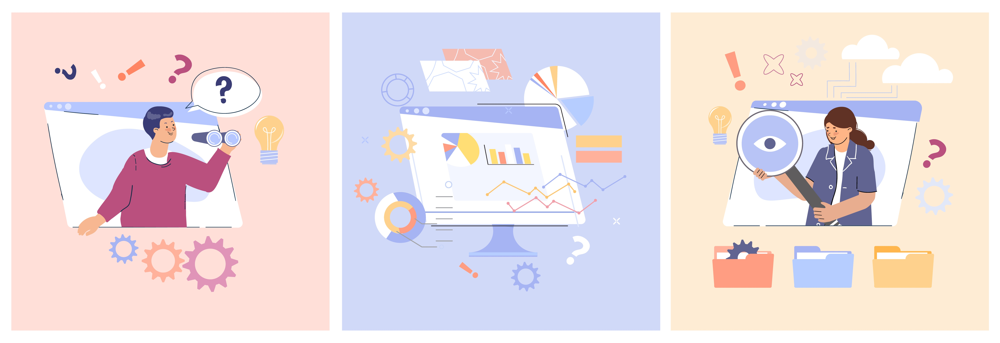

Diseñado por Freepik
Transferencia de documentos electrónicos
La transferencia de documentos electrónicos es un proceso fundamental dentro de la gestión documental en entornos digitales, ya que permite el traslado organizado de la información para garantizar su preservación y acceso en el tiempo.
“Consiste en el proceso técnico, administrativo y legal mediante el cual se entregan, a los archivos centrales (transferencia primaria) o a los archivos históricos (transferencia secundaria), los documentos que de conformidad con las tablas de retención documental han cumplido su tiempo de retención en la etapa de archivo de gestión o de archivo central respectivamente.”
(Archivo General de la Nación, 2017)
(Archivo General de la Nación, 2017)
De acuerdo con esta definición, la transferencia documental electrónica se realiza siguiendo estrictamente las Tablas de Retención Documental (TRD) y bajo los lineamientos del Archivo General de la Nación, garantizando la integridad, autenticidad y conservación de los expedientes digitales a largo plazo.
Fuente: Archivo General de la Nación